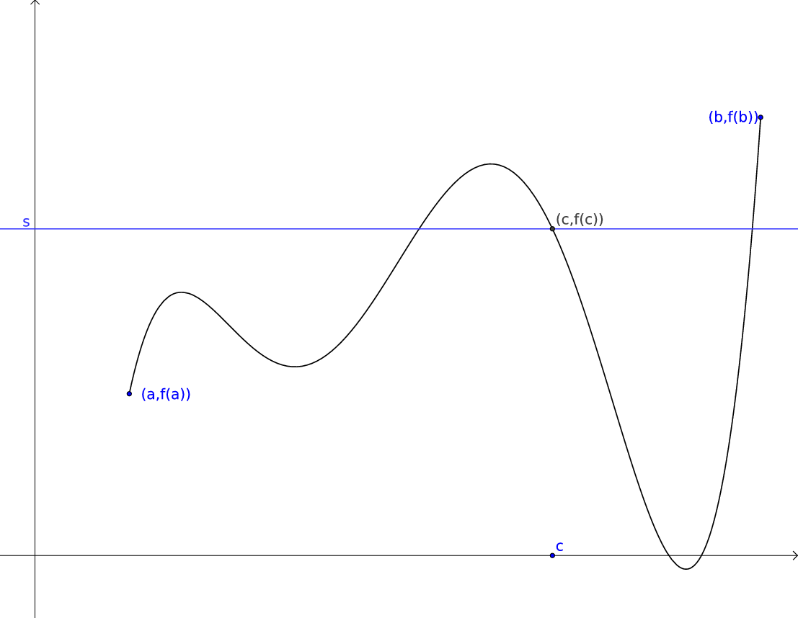

Viðfangsefnið
There is a theory which states that if ever anybody discovers exactly what the Universe is for and why it is here, it will instantly disappear and be replaced by something even more bizarre and inexplicable. There is another theory which states that this has already happened. -Douglas Adams
Stærðfræðigreining
Grunnhugmyndin
Stærðfræðigreining grundvallast á því að mæla breytingu (oft með tilliti til tíma)
Sagan Sett fram samtímis, en óháð, af Isaac Newton og Gottfried Leibniz í lok 17. aldar.

Ítarefni Fyrir nánari útlistun á hugtökunum sem við fjöllum um þá er hægt að skoða
Forrit
Tölur
1.1 Skilgreining
1.2 Athugasemd Margir vilja telja \(0\) með sem náttúrlega tölu. Það er eðlilegt ef maður lítur á náttúrlegu tölurnar þannig að þær tákni fjölda. Ef maður lítur hins vegar þannig á að þær séu notaðar til að númera hluti þá er 0 ekki með.
1.3 Smíði rauntalna Rauntölur eru smíðaðar úr ræðu tölunum með því að fylla upp í götin.
T.d. eru
ekki ræðar tölur (það er ekki hægt að skrifa þær sem brot \(\frac ab\), þar sem \(a\) og \(b\) eru heilar tölur), en þær eru rauntölur.
1.4 Frumsendan um efra mark Látum \(A\) vera mengi af rauntölum sem er þannig að til er tala \(x\), þannig að fyrir allar tölur \(a \in A\) þá er
Þá er til rauntala \(x_0\) sem kallast minnsta efra mark fyrir \(A\), sem er þannig að \(a\leq x_0\) fyrir allar tölur \(a\in A\) og ef \(x<x_0\) þá er til tala \(a\in A\) þannig að \(a>x\).
Bil
1.5 Skilgreining Látum \(a\) og \(b\) vera rauntölur þannig að \(a<b\). Skilgreinum
Þessi bil sem er skilgreind hér fyrir ofan eru kölluð endanleg. Til eru fleiri gerðir af bilum:
(v) opið óendanlegt bil \((a,\infty)=\{x\in {{\mathbb R}}; a<x\}\)
(vi) opið óendanlegt bil \((-\infty, a)=\{x\in {{\mathbb R}}; x<a\}\)
(vii) lokað óendanlegt bil \([a,\infty)=\{x\in {{\mathbb R}}; a\leq x\}\)
(viii) lokað óendanlegt bil \((-\infty, a]=\{x\in {{\mathbb R}}; x\leq a\}\)
1.6 Skilgreining Mengi \(A\) af rauntölum kallast bil ef um allar tölur \(a<b\) sem eru í menginu \(A\) gildir að ef \(a<x<b\) þá er \(x\) líka í menginu \(A\). Þ.e. engin göt.
1.7 Athugasemd
(i) Sérhvert bil á rauntalnaásnum er af einni þeirra gerða sem talin er upp í Skilgreiningu 1.5. (Þessi staðhæfing er jafngild frumsendunni um efra mark.)
og
Vörpun
1.8 Skilgreining Vörpun frá mengi \(X\) yfir í mengi \(Y\) er regla sem úthlutar sérhverju staki \(x\) í \(X\) nákvæmlega einu staki \(f(x)\) í \(Y\). Táknum þetta með \(f:X \to Y\).
Stakið \(f(x)\) kallast gildi vörpunarinnar (í punktinum \(x\)).
1.9 Skilgreining Mengið \(X\) kallast skilgreiningarmengi \(f\), mengið \(Y\) kallast bakmengi \(f\) og mengið \(f(X) = \{ f(x); x \in X \}\) kallast myndmengi \(f\).
Samskeyting
1.10 Skilgreining Látum \(f:X \to Y\) og \(g:Y \to Z\) vera varpanir. Vörpunin \(g\circ f:X \to Z\) sem skilgreind er með \((g\circ f)(x)=g(f(x))\) kallast samskeyting \(f\) og \(g\). Stakið \(g(f(x)) \in Z\) fæst með því að beita fyrst vörpuninni \(f\) á stakið \(x\) og síðan vörpuninni \(g\) á stakið \(f(x)\).
Eintækni/átækni
1.11 Athugasemd Það er ekki víst að öll gildin í \(Y\) séu tekin (þ.e. \(f(X)\) getur verið minna en \(Y\)). Eins þá er mögulegt að \(f\) taki sama gildið oftar en einu sinni.
1.12 Skilgreining Við segjum að vörpunin \(f\) sé átæk ef \(f(X)=Y\), það þýðir að fyrir sérhvert stak \(y\) í \(Y\) þá er til (amk. eitt) stak \(x\) í \(X\) þannig að \(f(x)=y\).
Segjum að vörpunin \(f\) sé eintæk ef \(f(x_1) = f(x_2)\) hefur í för með sér að \(x_1=x_2\), þ.e. sérhvert gildi sem vörpunin tekur er bara tekið einu sinni.
Andhverfa
1.13 Skilgreining Vörpun sem er bæði eintæk og átæk kallast gagntæk.
1.14 Setning Látum \(f:X \to Y\) vera vörpun. Sagt er að \(f\) sé andhverfanleg ef til er vörpun \(f^{-1}:Y \to X\) þannig að samskeyting varpananna \(f\) og \(f^{-1}\) annars vegar og \(f^{-1}\) og \(f\) hins vegar sé viðeigandi samsemdarvörpun, þ.e. \(f^{-1}\circ f=id_X\) og \(f\circ f^{-1} = id_Y\).
Graf
1.15 Athugasemd Venjulega hjá okkur þá eru mengin \(X\) og \(Y\) mengi af rauntölum. Þegar \(Y\) er mengi af tölum þá er notast við orðið fall í stað orðsins vörpun.
1.16 Skilgreining Látum \(f:X \to Y\) vera fall þannig að \(X\) og \(Y\) eru mengi af rauntölum. Graf fallsins \(f\) er þá mengi allra punkta í planinu \({{\mathbb R}}^2\) af gerðinni \((x,f(x))\) þar sem \(x\in X\). Notum oft \(y\) í stað \(f(x)\).
Markgildi
1.17 Óformleg skilgreining Segjum að \(f(x)\) stefni á tölu :math:`L` þegar :math:`x` stefnir á :math:`a`, og ritum \(\lim_{x\rightarrow a} f(x)=L\), ef við getum tryggt að \(f(x)\) sé eins nálægt \(L\) og við viljum bara með því að velja \(x\) nógu nálægt \(a\).
1.18 Skilgreining Gerum ráð fyrir að fall \(f\) sé skilgreint á opnu bili umhverfis punktinn \(a\), nema hvað hugsanlega er \(f(a)\) ekki skilgreint. Við segjum að \(f(x)\) stefni á tölu :math:`L` þegar :math:`x` stefnir á :math:`a`, og ritum \(\lim_{x\rightarrow a} f(x)=L\), ef eftirfarandi skilyrði er uppfyllt:
Fyrir sérhverja tölu :math:`epsilon>0` er til tala :math:`delta>0` þannig að um öll :math:`x` þannig að
1.19 Athugasemd Þegar athugað er hvort markgildið \(\lim_{x\rightarrow a} f(x)\) er til og hvert gildi þess er þá skiptir ekki máli hvort \(f(a)\) er skilgreint eða ekki.
Markgildi frá hægri
1.20 Óformleg skilgreining Gerum ráð fyrir að fall \(f\) sé skilgreint á opnu bili \((a,b)\). Segjum að \(f(x)\) stefni á tölu :math:`L` þegar :math:`x` stefnir á :math:`a` frá hægri, og ritum \(\lim_{x\rightarrow a^+} f(x)=L\), ef við getum tryggt að \(f(x)\) sé eins nálægt \(L\) og við viljum bara með því að velja \(x>a\) nógu nálægt \(a\).
1.21 Skilgreining Gerum ráð fyrir að fall \(f\) sé skilgreint á opnu bili \((a,b)\). Við segjum að \(f(x)\) stefni á tölu :math:`L` þegar :math:`x` stefnir á :math:`a` frá hægri, og ritum \(\lim_{x\rightarrow a^+} f(x)=L\), ef eftirfarandi skilyrði er uppfyllt.
Fyrir sérhverja tölu :math:`epsilon>0` er til tala :math:`delta>0` þannig að um öll :math:`x` þannig að
Markgildi frá vinstri
1.22 Óformleg skilgreining Gerum ráð fyrir að fall \(f\) sé skilgreint á opnu bili \((b,a)\). Segjum að \(f(x)\) stefni á tölu :math:`L` þegar :math:`x` stefnir á :math:`a` frá vinstri, og ritum \(\lim_{x\rightarrow a^-} f(x)=L\), ef við getum tryggt að \(f(x)\) sé eins nálægt \(L\) og við viljum bara með því að velja \(x<a\) nógu nálægt \(a\).
1.23 Skilgreining Gerum ráð fyrir að fall \(f\) sé skilgreint á opnu bili \((b,a)\). Við segjum að \(f(x)\) stefni á tölu :math:`L` þegar :math:`x` stefnir á :math:`a` frá vinstri, og ritum \(\lim_{x\rightarrow a^-} f(x)=L\), ef eftirfarandi skilyrði er uppfyllt.
Fyrir sérhverja tölu :math:`epsilon>0` er til tala :math:`delta>0` þannig að um öll :math:`x` þannig að
1.24 Setning Gerum ráð fyrir að fall \(f\) sé skilgreint á opnu bili umhverfis punktinn \(a\), nema hvað hugsanlega er \(f(a)\) ekki skilgreint. Þá er
ef og aðeins ef
Önnur efnisatriði sem þið þurfið að skoða
Algeng markgildi
2.1 Dæmi
Reiknireglur fyrir markgildi
2.2 Setning Gerum ráð fyrir að \(\lim_{x\rightarrow a}f(x)=L\) og að \(\lim_{x\rightarrow a}g(x)=M\). Þá gildir
(i) \(\lim_{x\rightarrow a}\Big(f(x)+g(x)\Big)=L+M\);
(ii) \(\lim_{x\rightarrow a}\Big(f(x)-g(x)\Big)=L-M\);
(iii) \(\lim_{x\rightarrow a}f(x)g(x)=LM\);
(iv) \(\lim_{x\rightarrow a}kf(x)=kL\), þar sem \(k\) fasti;
(v) \(\lim_{x\rightarrow a}f(x)/g(x)=L/M\), að því gefnu að \(M\neq 0\);
(vi) Gerum ráð fyrir að \(m\) og \(n\) séu heiltölur þannig að \(f(x)^{m/n}\) sé skilgreint fyrir öll \(x\) á bili \((b,c)\) umhverfis \(a\) (en ekki endilega fyrir \(x=a\)) og að \(L^{m/n}\) sé skilgreint. Þá er \(\lim_{x\rightarrow a}f(x)^{m/n}=L^{m/n}\).
(vii) Ef til er bil \((b,c)\) sem inniheldur \(a\) þannig að \(f(x)\leq g(x)\) fyrir öll \(x\in (b,c)\), nema kannski \(x=a\), þá er \(\lim_{x\rightarrow a}f(x)=L\leq M=\lim_{x\rightarrow a}g(x)\).
VARÚÐ
2.3 Athugasemd Liður (i) í setningunni á undan segir að ef markgildin \(\lim_{x\to a} f(x)\) og \(\lim_{x\to a} g(x)\) eru til þá sé markgildið \(\lim_{x\to a} (f(x)+g(x))\) einnig til.
En hún segir ekki að ef \(f\) og \(g\) eru föll þannig að markgildið \(\lim_{x\to a} (f(x)+g(x))\) er til, að þá séu markgildin \(\lim_{x\to a} f(x)\) og \(\lim_{x\to a} g(x)\) einnig til.
Klemmureglan
(iv)-liður í setningu 2.2 að ofan Ef til er bil \((b,c)\) sem inniheldur \(a\) þannig að \(f(x)\leq g(x)\) fyrir öll \(x\in (b,c)\), nema kannski \(x=a\), þá er \(\lim_{x\rightarrow a}f(x)=L\leq M=\lim_{x\rightarrow a}g(x)\).
2.4 Setning. Gerum ráð fyrir að \(f(x)\leq h(x)\leq g(x)\) fyrir öll \(x\) á bili \((b, c)\) sem inniheldur \(a\), nema kannski \(x=a\). Gerum enn fremur ráð fyrir að
Þá er \(\lim_{x\rightarrow a}h(x)=L\).
Skiladæmi
Frágangur skiladæma
Önnur efnisatriði sem þið þurfið að skoða
Markgildi þegar \(x\) stefnir á \(\infty\)
3.1 Óformleg skilgreining Gerum ráð fyrir að fall \(f\) sé skilgreint á bili \((a, \infty)\). Segjum að \(f(x)\) stefni á tölu :math:`L` þegar :math:`x` stefnir á :math:`infty`, og ritum \(\lim_{x\rightarrow \infty} f(x)=L\), ef við getum tryggt að \(f(x)\) sé eins nálægt \(L\) og við viljum bara með því að velja \(x\) nógu stórt.
Markgildi þegar \(x\) stefnir á \(\infty\) (framh)
3.2 Skilgreining Gerum ráð fyrir að fall \(f\) sé skilgreint á bili \((a,\infty)\). Við segjum að \(f(x)\) stefni á tölu :math:`L` þegar :math:`x` stefnir á :math:`infty`, og ritum \(\lim_{x\rightarrow \infty} f(x)=L\), ef eftirfarandi skilyrði er uppfyllt
fyrir sérhverja tölu \(\epsilon>0\) er til tala \(R\) þannig að um öll \(R<x\)
gildir að \(|f(x)-L|<\epsilon\).
Markgildi þegar \(x\) stefnir á \(-\infty\) Fyrir \(-\infty\) er þetta gert með sama sniði.
3.3 Óformlega skilgreining Gerum ráð fyrir að fall \(f\) sé skilgreint á bili \((-\infty, a)\). Segjum að \(f(x)\) stefni á tölu :math:`L` þegar :math:`x` stefnir á :math:`-infty`, og ritum \(\lim_{x\rightarrow -\infty} f(x)=L\), ef við getum tryggt að \(f(x)\) sé eins nálægt \(L\) og við viljum bara með því að velja \(x\) sem nógu stóra mínus tölu.
3.4 Skilgreining Gerum ráð fyrir að fall \(f\) sé skilgreint á bili \((-\infty,a)\). Við segjum að \(f(x)\) stefni á tölu :math:`L` þegar :math:`x` stefnir á :math:`-infty`, og ritum \(\lim_{x\rightarrow -\infty} f(x)=L\), ef eftirfarandi skilyrði er uppfyllt
fyrir sérhverja tölu \(\epsilon>0\) er til tala \(R\) þannig að um öll \(x<R\)
gildir að :math:`|f(x)-L|<epsilon`.
\(\infty\) sem markgildi
3.5 Óformleg skilgreining. Gerum ráð fyrir að fall \(f\) sé skilgreint á opnu bili umhverfis punktinn \(a\), nema hvað hugsanlega er \(f(a)\) ekki skilgreint. Segjum að \(f(x)\) stefni á :math:`infty` þegar :math:`x` stefnir á :math:`a`, og ritum \(\lim_{x\rightarrow a} f(x)=\infty\), ef við getum tryggt að \(f(x)\) sé hversu stórt sem við viljum bara með því að velja \(x\) nógu nálægt \(a\).
3.6 Skilgreining. Gerum ráð fyrir að fall \(f\) sé skilgreint á opnu bili umhverfis punktinn \(a\), nema hvað hugsanlega er \(f(a)\) ekki skilgreint. Við segjum að \(f(x)\) stefni á :math:`infty` þegar :math:`x` stefnir á :math:`a`, og ritum \(\lim_{x\rightarrow a} f(x)=\infty\), ef eftirfarandi skilyrði er uppfyllt
fyrir sérhverja tölu :math:`B` er til tala :math:`delta>0` þannig að um öll :math:`x` þannig að
:math:`0<|x-a|<delta` gildir að :math:`f(x)>B`.
Málvenja
3.7 Athugasemd. Athugið að \(\infty\) er ekki tala. Þó að \(\lim_{x\rightarrow a} f(x)=\infty\) þá er samt sagt að markgildið \(\lim_{x\rightarrow a} f(x)\) sé ekki til.
\(-\infty\) sem markgildi
3.8 Óformleg skilgreining. Gerum ráð fyrir að fall \(f\) sé skilgreint á opnu bili umhverfis punktinn \(a\), nema hvað hugsanlega er \(f(a)\) ekki skilgreint. Segjum að \(f(x)\) stefni á :math:`-infty` þegar :math:`x` stefnir á :math:`a`, og ritum \(\lim_{x\rightarrow a} f(x)=-\infty\), ef við getum tryggt að \(f(x)\) sé hversu lítið sem við viljum bara með því að velja \(x\) nógu nálægt \(a\).
3.9 Skilgreining. Gerum ráð fyrir að fall \(f\) sé skilgreint á opnu bili umhverfis punktinn \(a\), nema hvað hugsanlega er \(f(a)\) ekki skilgreint. Við segjum að \(f(x)\) stefni á :math:`-infty` þegar :math:`x` stefnir á :math:`a`, og ritum \(\lim_{x\rightarrow a} f(x)=-\infty\), ef eftirfarandi skilyrði er uppfyllt
fyrir sérhverja tölu :math:`B` er til tala :math:`delta>0` þannig að um öll :math:`x` þannig að
:math:`0<|x-a|<delta` gildir að :math:`f(x)<B`.
Málvenja
3.10 Athugasemd. Athugið að \(-\infty\) er ekki tala. Þó að \(\lim_{x\rightarrow a} f(x)=-\infty\) þá er samt sagt að markgildið \(\lim_{x\rightarrow a} f(x)\) sé ekki til.
Markgildi með \(\sin\)
3.11 Sýnidæmi
Samfelldni
3.12 Skilgreining. Látum \(A\subseteq {{\mathbb R}}\) og \(x\in A\). Við segjum að \(x\) sé innri punktur \(A\) ef \(A\) inniheldur opið bil umhverfis \(x\), það er að segja til er tala \(\delta>0\) þannig að \((x-\delta, x+\delta)\subseteq A\).
Ef \(x\) er ekki innri punktur \(A\) og \(x\in A\) þá segjum við að \(x\) sé jaðarpunktur \(A\).
3.13 Skilgreining. Látum \(f\) vera fall og \(c\) innri punkt skilgreiningarsvæðis \(f\). Sagt er að \(f\) sé samfellt í punktinum \(c\) ef
3.14 Setning Látum \(f\) og \(g\) vera föll. Gerum ráð fyrir að \(c\) sé innri punktur skilgreiningarsvæðis beggja fallanna og að bæði föllin séu samfelld í punktinum \(c\). Þá eru eftirfarandi föll samfelld í \(c\):
Samskeyting samfelldra falla
3.15 Setning Látum \(g\) vera fall sem er skilgreint á opnu bili umhverfis \(c\) og samfellt í \(c\) og látum \(f\) vera fall sem er skilgreint á opnu bili umhverfis \(g(c)\) og samfellt í \(g(c)\). Þá er fallið \(f\circ g\) skilgreint á opnu bili umhverfis \(c\) og er samfellt í \(c\).
Hefð
3.16 Athugasemd Ef fall er skilgreint með formúlu og skilgreingamengið er ekki tilgreint sérstaklega, þá er venjan að líta alla þá punkta þar sem formúlan gildir sem skilgreingarmengi fallsins
Samfelld föll
3.17 Skilgreining Við segjum að fall \(f\) sé samfellt ef það er samfellt í sérhverjum punkti skilgreingarmengisins.
3.18 Dæmi Eftirfarandi föll eru samfelld
Að búa til samfelld föll
3.19 Athugasemd Með því að nota föllin úr Dæmi 3.18 sem efnivið þá getum við búið til fjölda samfelldra fall með því að beita aðgerðunum úr Setningu 3.14 og Setningu 3.15.
Upprifjun
4.1 Skilgreining Látum \(f\) vera fall og \(c\) innri punkt skilgreiningarsvæðis \(f\). Sagt er að \(f\) sé samfellt í punktinum \(c\) ef
4.2 Athugasemd Þessi skilgreining virkað aðeins fyrir innri punkta skilgreiningarsvæðisins. Hins vegar getum við útvíkkað skilgreininguna á samfelldni fyrir hægri og vinstri endapunkta bila með því að einskorða okkur við markgildi frá vinstri og hægri.
Hægri/vinstri samfelldni
4.3 Skilgreining (i) Fall \(f\) er samfellt frá hægri í punkti \(c\) ef \(\lim_{x\rightarrow c^+}f(x)=f(c)\).
Hér er gert ráð fyrir að fallið \(f\) sé amk. skilgreint á bilinu \([c, a)\).
(ii) Fall \(f\) er samfellt frá vinstri í punkti \(c\) ef \(\lim_{x\rightarrow c^-}f(x)=f(c)\).
Hér er gert ráð fyrir að fallið \(f\) sé amk. skilgreint á bilinu \((a, c]\).
Samfelld föll
4.4 Skilgreining (uppfærð) Gerum ráð fyrir að \(f\) sé fall sem er skilgreint á mengi \(A\), þar sem \(A\) er sammengi endanlega margra bila. Við segjum að fallið \(f\) sé samfellt ef það er samfellt í öllum innri punktum skilgreingarmengisins, og ef það er samfellt frá hægri/vinstri í jaðarpunktum skilgreingarmengisins, eftir því sem við á.
4.5 Athugasemd Ef fall er samfellt á opnu bili \((a,b)\), og ef \(a<c<d<b\), þá er fallið einnig samfellt á bilinu \([c,d]\).
Há- og lággildislögmálið
4.6 Setning Látum \(f\) vera samfellt fall skilgreint á lokuðu takmörkuðu bili \([a,b]\). Þá eru til tölur \(x_1\) og \(x_2\) í \([a,b]\) þannig að fyrir allar tölur \(x\) í \([a,b]\) er
Þetta þýðir að samfellt fall \(f\) á lokuðu og takmörkuðu bili \([a,b]\) tekur bæði hæsta og lægsta gildi á bilinu. Hæsta gildið er þá \(f(x_2)\) og lægsta gildið er \(f(x_1)\).
4.7 Athugasemd Það er mögulegt að fallið taki há/lággildi sitt í fleiri en einum punkti.
Milligildissetningin
4.8 Setning Látum \(f\) vera samfellt fall skilgreint á lokuðu takmörkuðu bili \([a,b]\). Gerum ráð fyrir að \(s\) sé tala sem liggur á milli \(f(a)\) og \(f(b)\). Þá er til tala \(c\) sem liggur á milli \(a\) og \(b\) þannig að \(f(c)=s\).
<iframe scrolling=“no” src=“https://tube.geogebra.org/material/iframe/id/zEQQcGcQ/width/1075/height/767/border/888888/rc/false/ai/false/sdz/true/smb/false/stb/false/stbh/true/ld/false/sri/true/at/auto” width=“1075px” height=“767px” style=“border:0px;”> </iframe>
4.9 Fylgisetning Ef \(P(x)=a_nx^n+a_{n-1}x^{n-1}+\cdots+a_1x+a_0\) er margliða af oddatölu stigi, þá er til rauntala \(c\) þannig að \(P(c)=0\).
Sönnun Gerum ráð fyrir að \(a_n>0\). Þá er \(\lim_{x\to -\infty} P(x) = -\infty\) og \(\lim_{x\to \infty} P(x) = \infty\).Það þýður að til eru tölur \(a\) og \(b\) þannig að \(P(a)<0\) og \(P(b)>0\). Með því að beita Milligildissetningunni á fallið \(P\) á bilinu \([a,b]\) og með \(s=0\) þá fæst að til er núllstöð á bilinu \([a,b]\).
Ef \(a_n < 0\) þá víxlast markgildin að ofan en röksemdafærslan er að öðru leyti eins.